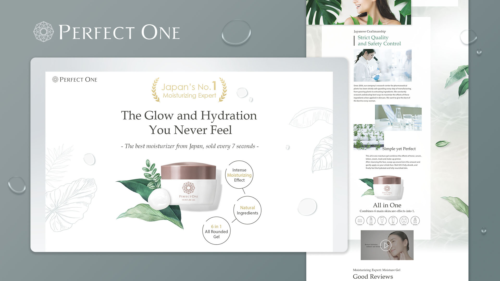
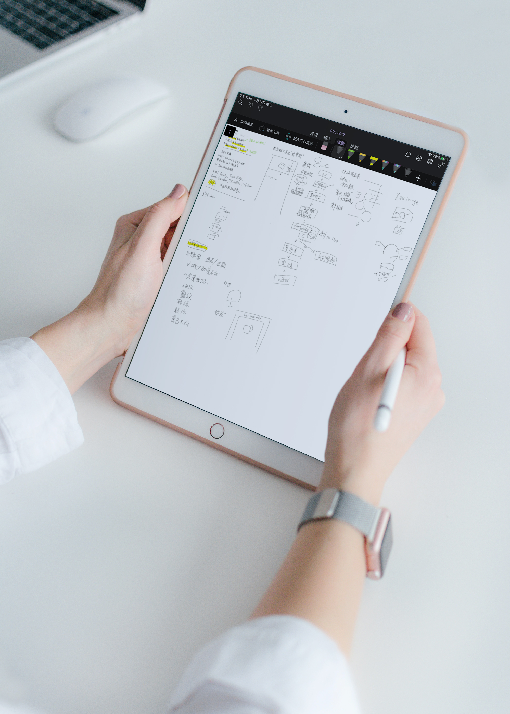
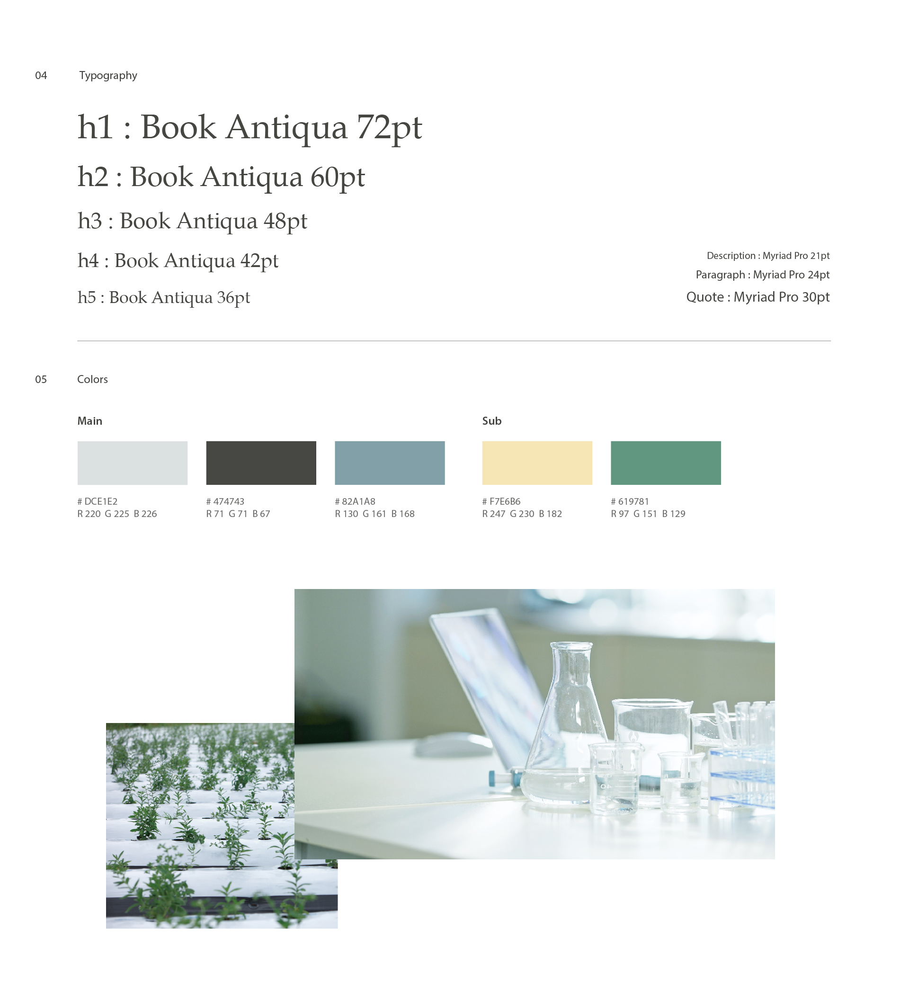
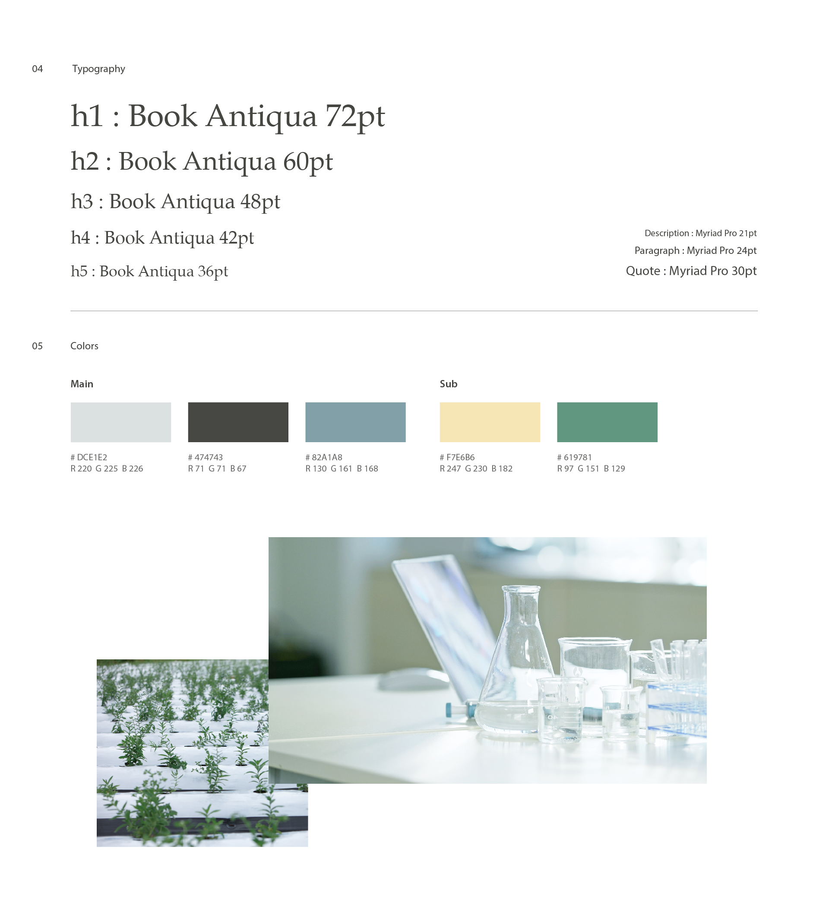
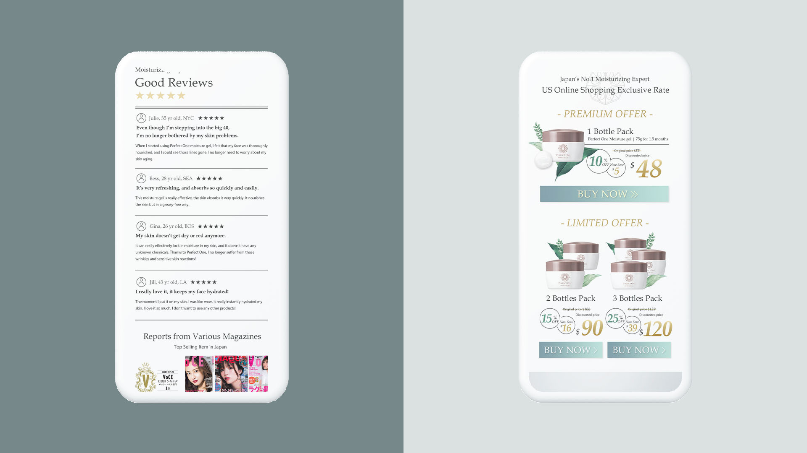
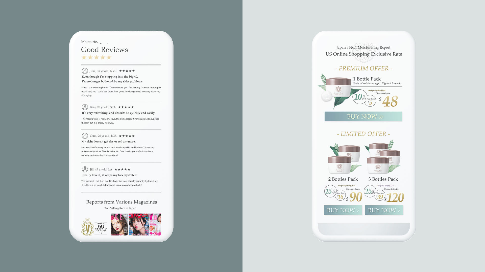

Moisture Gel
WEB : Product Landing Page
My Role : Art Director / Design Lead / Product Manager
與日本美妝品牌Perfect
One合作，首次進入美國市場。並以日本獨特的行銷模式“一頁式網頁”進軍海外。在團隊分析的結果下，發現以簡約自然的品牌風格較符合市場，並以此為基礎結合日本一頁式的架構，設計出Moisture
Gel產品的銷售網頁。
Tool
Adobe Photoshop
Visual Studio Code
Adobe Photoshop
Visual Studio Code

前期企劃
此專案當中除了設計擔當外，還執行企劃與提案工作內容。在企劃一職時，嘗試訪問一些當地美國人對保養品的購買習慣，及時事新聞掌握在地文化，奠定關於此產品的優勢，並撰寫網頁構成。而在媒體投放上，也利用前期分析做一系列的Banner設計，期望把Perfect
One的品牌廣為美國人所知。

 

 
